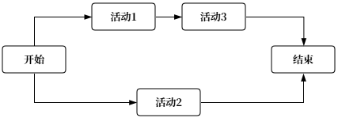
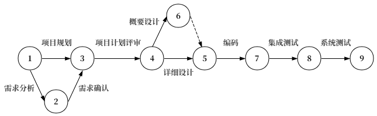
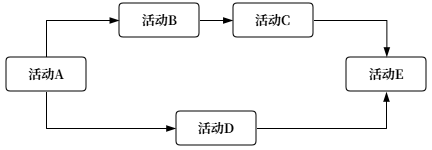
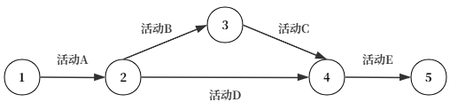

软件项目进度计划
Progress- 1. 网络图
- 展示逻辑关系/依赖关系
- PDM 和 ADM 是两种画网络图的方式，现代项目几乎都用 PDM
- CPM 和 PERT 是两种计算工期的方法：CPM 假设工期确定，用来找关键路径；PERT 用三点估算处理不确定工期
- 也叫单代号网络图、优先图法、节点法
- 节点：活动/任务，基本单元
- 箭头：活动之间的依赖关系
- 关系：紧后/前置和紧后/后续
- 也叫双代号网络图、箭线法、活动箭线图 AoA - Active On the Arrow
- 节点和箭线都要编号
- 可以使用虚拟活动 Dummy Activity 表示依赖关系；虚拟活动不消耗工期
- 2. 燃尽图 Burn-Down
- 3. 燃起图 Burn-Up
- 4. 甘特图 Gantt
1.1 PDM - Precedence Diagramming Method

1.2 ADM - Arrow Diagramming Method



练习 Drill
将PDM改画为ADM

参考效果
ADM

采用Gantt图表示软件项目进度安排，下列说法中正确的是（）。
A. 能够反映多个任务之间的复杂关系
B. 能够直观表示任务之间相互依赖制约关系
C. 能够表示哪些任务是关键任务
D. 能够表示子任务之间的并行和串行关系
制定进度计划的两个重要工具和方法是（）。
A. Gantt图
B. CoCoMo
C. PERT图
D. HIPO图